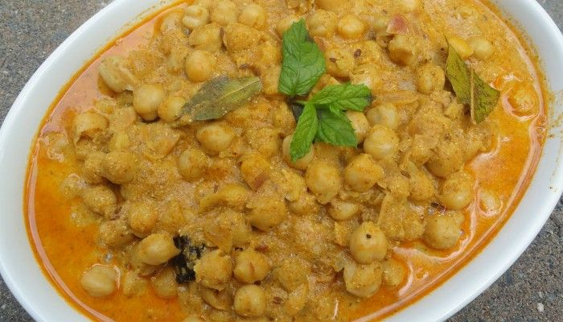

HIMACHALI FAMOUS DISHES
MADRA

Where to find? Chamba and Kangra
Madra is originally a delicacy that belongs to the Chamba district of Himachal Pradesh. The dish mainly consists of the soaked chickpeas (chana) or vegetables. Cooked well in the oil and various spices such as cloves, cinnamon, cardamoms, cumin, coriander powder and turmeric powder enhance the taste of this dish. Madra is one of the dishes that represents the food culture of Himachal Pradesh. Every restaurant, every occasion, and the festival will have Madra offered to you with utmost love.
Chana Madra is a popular Himachali curry prepared with chickpeas, yogurt and spices. It is best served with simple steamed rice.Chana means “chickpeas” and Madra means “thick yogurt curry” in Himachal. So Chana Madra is nothing but a simple curry from the Pahari cuisine where white chickpeas are boiled and added to a spicy and tangy yogurt based gravy.
DHAAM

Where to find? Manali and Chamba
Dhaam is a complete food that along with a great taste promises a healthy dose of nutrients. The dish includes dal, rajma, rice, curd, boor ki Kadi and is very well complemented with gur (jaggery). Dhaam is a plate full of delicious delicacies that are a must-serve on the occasions and festivals. The distinctive feature about this dish is that it is prepared by special chefs known as ‘botis’. To grab the best taste of Dhaam you must visit Himachal during festivals.
Dhaam is a traditional feast celebrated in the Indian state of Himachal Pradesh. Dhaam is prepared and served on every joyful event or celebration in the family. Temples also serve Dhaam on most of the religious festivals or auspicious dates.
Himachali food varies from region to region. The cuisine of Himachal Pradesh is largely based on the climate and topography of the state. While the everyday meal is the usual dal-chawal-subzi-roti, special dishes are cooked during festive occasions. Amongst festive food, the traditional meal, Dham (lunch served in traditional occasions) finds instant mention. The traditional Dham is celebrated with great enthusiasm.
Dham is cooked only by Botis (a particular caste of Brahmins who are hereditary chefs). Preparation for this elaborate mid-day meal begins the night before. The utensils used for cooking the food are normally brass ones called "Batohi", "Baltohi" or "Charoti" in local languages. It is served in courses to people who sit on floor. The food is served on leaf plates called pattal or pattlu (in local Himachali language). The Dham includes plain aromatic rice, fried pulses or dal, spicy vegetable Curry of red kidney beans and many desserts to satisfy one's appetite.
SIDDU
Made from wheat flour, Sidu is a local side- dish of Himachal Pradesh which greatly complements the main course of mutton or some vegetables. The preparation of Sidu is difficult and time-consuming, but for the taste that it renders, every minute of preparation is worth it. The wheat flour is kept for 4-5 hours for the yeast to settle down. Later, the dough is filled with fat and put on the direct flame to get the half-cooked dough. This partly cooked dough is then steamed to keep the taste and nutrients of the ingredients intact. Sidu can easily be found in the local restaurants of Himachal Pradesh to give tourists a flavour of Himachali cuisine.
Siddu is the most famous Pahadi dish among the natives of Himachal . Siddu is a regularly consumed dish which is being followed from ages and ages . Healthy traditional dish . There are numerous variations in preparing the filling for Siddu . Siddu is normally a steamed wheat which includes a filling within. People do use peas filling , potato filling , urad dal filling , rajma filling , walnut peanut filling , etc . I have used walnut peanut filling in my Siddu.
TUDKIYA BHAAT
Where to find? Chamba
Tudkiya Bhath is the authentic pulao of Himachal Pradesh that pahadi people cook in their own very style. What’s unique? The dish is not only cooked with Indian spices but an extra add up to the lentils, potatoes and yoghurt along with onion, tomatoes, garlic, cinnamon, cardamom provides this dish such a great taste that will make you want it again and again. For the best taste, Tudkiya Bath is complemented with mash dal and few drops of lime juice.
Tudkiya Bhat is a delicious flavourful rice pulao, cooked using spices like cinnamon, bay leaf, chilli powder, ginger, garlic, cardamom, lentils, potatoes, onions, and yoghurt.
Serve Tudkiya Bhat with a side of Mashed dal/ Kangra Teliya Mah and lime… the ultimate comfort food!
The beautiful state of Himachal Pradesh offers a wide range of lip-smacking and savoury food items. The cuisine of Himachal Pradesh has a significant influence on the Punjabi and Tibetan style of food. The people of Himachal Pradesh prefer very spicy food items.
In their daily and regular routine Himachal Pradesh people have simple North Indian dishes that are easy to make and very tasty to eat. As compared to other states in north India, non-vegetarian cuisine is more preferred.
Traditionally, Himachal Pradesh cuisine is dominated by red meat and wheat bread, thick and rich gravy, with aromatic spices, used in abundance as the base of many dishes. Until recently, tubers like potatoes and turnips were all they ate in the name of vegetables. Green vegetables, however, are increasingly finding their way into Himachali food.
BABRU
Where to find? Shimla
Himachal have added a unique twist to popular Kachoris of North India. Babru is a flat bread which is prepared with the stuffing of black gram paste which is added to the kneaded dough. The crisp and the scrumptious taste that this dish has to offer will make you forget the conventional Kachoris of North India. Babru is best enjoyed with Tamarind chutney and it also complements the famous Chana Madra of Himachal cuisine.
Babru is a famous black gram stuffed kachoris or puris. The black gram or the whole urad dal is soaked overnight and is ground to a course mix, before stuffing it into the kachoris and deep fried in oil. It makes for a delicious weekend breakfast with any Indian sabzi.
Serve the Babru Recipe (Himachali Black Gram Stuffed Bread), along with Chana Madra and Boondi Raita for a delicious weekend breakfast.
KULLU TROAT FISH
Where to Find? Kullu
Himachal Pradesh promises a great number of non-vegetarian delicacies. Kullu trout is a famous dish of Kullu region which is prepared with trout fish. The marinated fish is cooked in the minimal spices to keep the nutrients and the original taste of Trout intact. The dish is best coupled with the number of boiled vegetables, and hence it remains one of the healthiest delicacies of Himachal Pradesh.
Kullu trout is a traditional pahari dish that originates from the hilly state of Himachal Pradesh. Kullu Trout is a fish recipe, preparing which is easy and hassle-free. Fried fish prepared in minimal spices to retain the natural taste of fish, this dish will surely leave you wanting more and more with each bite. This will help you devour flavours straight from the mountains. If you are the kind of person who loves seafood and is always on the lookout for something new, you will not want to miss out on this dish. Prepare this enticing dish to introduce diversity in your meals and gather all the praises from your family members.
Serve this delightful fish at your kitty party, potluck or any other function and amaze your guests with your culinary skills. This flavourful dish will surely help you become the star of any event and a celebrated chef in the eyes of your loved ones.
Main Page